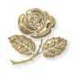

=Abertura=
Convidamos-lhe a rezar assim :
"ESPÍRITO SANTO"


aberto à Vossa silenciosa e
forte palavra inspiradora;
fechado a todas ambições mesquinhas;
alheio a qualquer desprezível competição humana;
compenetrado do sentido da Santa Igreja!

UM CORAÇÃO BEM GRANDE,
desejoso de se tornar semelhante ao CORAÇÃO DO
SENHOR JESUS!

UM CORAÇÃO GRANDE E GENTIL,
que tenha vontade de querer retribuir a ternura encantadora e o maravilhoso amor do CORAÇÃO IMACULADO DA SANTA MÃE!

UM CORAÇÃO GRANDE, GENTIL
E FORTE,
para amar a todos, servir e sofrer por todos!

UM CORAÇÃO GRANDE, GENTIL, FORTE E MISERICORDIOSO,
para superar todas as provações, todo o tédio, todo o cansaço, toda desilusão, toda ofensa!

SOBRETUDO, DAI-ME UM CORAÇÃO GRANDE E FORTE,
perseverante até o sacrifício, se necessário;
um coração cuja felicidade maior é palpitar de alegria com o CORAÇÃO DE CRISTO, sempre cumprindo com humildade e fidelidade a Vontade do ETERNO PAI!
Papa Paulo VI